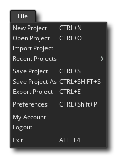

The file menu is where you can choose to change, save or import projects as well as set the GameMaker Studio 2 IDE preferences. The available options are:
- New Project - This is for creating a new project from scratch in GameMaker Studio 2. It will open the "Save" dialogue and prompt you to choose a location to save the new project to. Once you have given a name to the project and a location to save it, you will be taken to a new, blank, workspace to start working on it. Project files are saved with the *.yyp file extension.
- Open Project - This will open the GameMaker Studio 2 file explorer for you to select a previously created *.yyp project file for loading.
- Import Project - If you have a project made with the GameMaker: Studio 1.4 software from YoYo Games, you can select this option to import either the *.gmx or the *.gmz file.
NOTE: To import a previous GameMaker project into GameMaker Studio 2 it must have been created using the 1.4 version, and even then it may not work directly on import. A great many things are different between GameMaker Studio 2 and GameMaker: Studio 1.4, and so your older projects may need some tweaking for them to work. Please see the article Porting A GM:S 1.4 Game To GameMaker Studio 2 on the YoYo Games Knowledge Base and the section of the manual that covers Obsolete Functions and Compatibility Scripts.IMPORTANT! Importing old projects and YYZ projects is not available with the Trial Licence of the product.IMPORTANT! Importing a YYZ project that contains font resources may require you to "regenerate" the fonts by removing/re-adding them, or by changing the font in the font editor and then setting it back again. This is because the existing font information is retained by the YYZ when it is exported, and, on import later or on another machine, the project may not have the required fonts installed already (or may have a different font of the same name). This should only be done if you are seeing issues with how the font renders after import.
- Recent Projects - You can use this option to view recently used projects. Selecting it will re-open the Start Page (should you have closed it) and you can select a recently used project from the list found there.
- Save Project - This will save your game to the same location as you defined when you created the project (or where you opened it from).
- Save Project As - Same as above, only you specify the location and the new name of the project.
- Export Project - This will export the project as a single *.yyz file. Very useful for sending copies to people or for saving backups.
IMPORTANT! Exporting YYZ projects is not available with the Trial Licence of the product.- Preferences - Selecting this will take you to the Preferences Windows where you can set up how GameMaker Studio 2looks and feels.
- New IDE - When you select this a new instance of the IDE will be opened for you to use (it will open on the Start Page).
- My Account - This option will open your default web browser and take you to your YoYo Account page.
- Logout - Selecting this will log you out of GameMaker Studio 2. You will need to log in again with the same licence (or any other) to be able to use the product later.
IMPORTANT! If you have been using a Trial Licence for GameMaker Studio 2 and then buy one of the other licences (Desktop, Mobile, UWP, Web or Console) then you may need to log out of the IDE and then restart GameMaker Studio 2 and log back in again to make sure that the new licence is applied correctly (although this should happen automatically).- Exit - Exit GameMaker Studio 2 to the desktop.